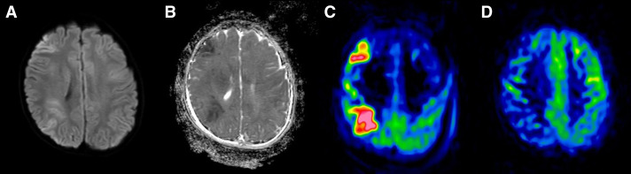
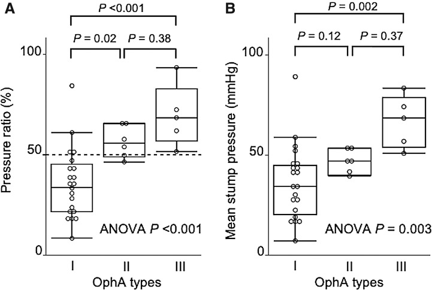
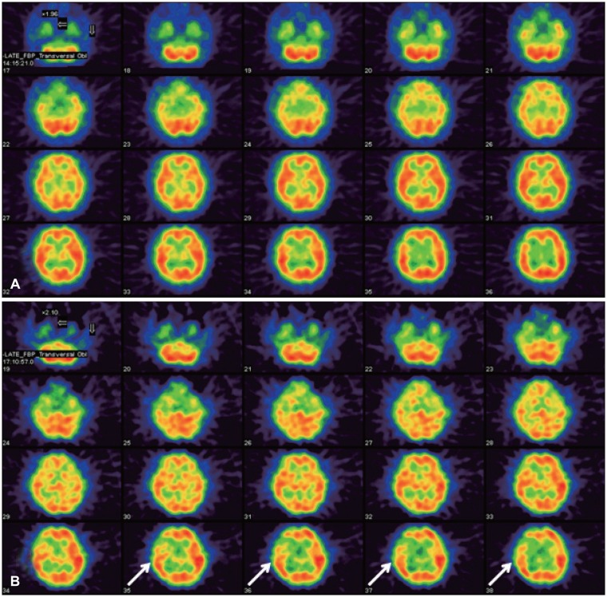
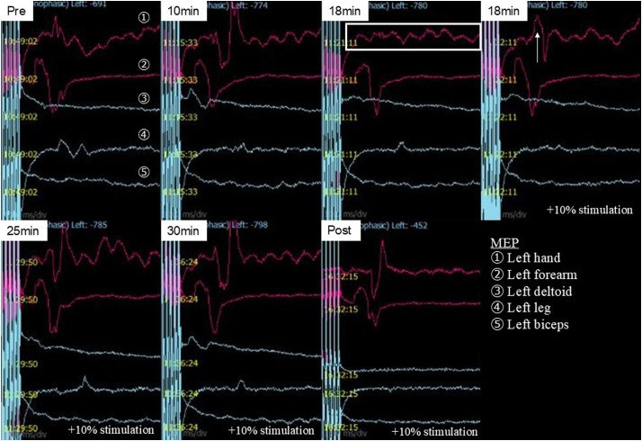

3059 — Thiếu máu não sau bít động mạch cảnh trong: BTO âm vẫn đột quỵ, hội chứng thiếu máu bán cầu và khi nào mở bypass
Tags: pattern:thieu-mau-nao pattern:nhoi-mau-vung-nuoc pattern:hep-mach-canh pattern:luxury-perfusion pattern:gia-phinh vung:dong-mach-canh-trong vung:ban-cau-dai-nao vung:o-mach-nao protocol:BTO protocol:SPECT protocol:CT-tuoi-mau protocol:DSA protocol:MRI-ASL score:BTO-stump-pressure
Mức chắc chắn (certainty): tổng hợp y văn (literature synthesis) — ghép ca bé trai 9 tuổi phình động mạch cảnh trong hình rắn khổng lồ 39 mm, bít mẹ sau BTO có theo dõi MEP/SEP, nhồi máu vùng nước ngày 1 dù MEP ổn định (Journal of Neuroendovascular Therapy 2026, PMC12983365), 32 lần BTO với phân tích dòng động mạch mắt và áp lực stump (Neurologia Medico-Chirurgica 2021, PMC8280328), ca nam 23 tuổi giả phình động mạch cảnh trong đoạn đá, SPECT trong BTO bất đối xứng 21% → STA–MCA rồi bít mẹ, 8 năm không triệu chứng (Korean Journal of Neurotrauma 2015, PMC4847521), tổng quan 31 bài về tổn thương ICA trong mổ nội soi qua xoang bướm, dẫn số liệu Linskey (Surgical Neurology International 2020, PMC7656006), 7 ca bắc cầu STA–MCA hai nhánh + bít mẹ nội mạch (Acta Neurochirurgica 2026, PMC12996001), ca bít mẹ động mạch não sau có PCoA thể thai nhi gây nhồi máu đồi thị–thái dương–chẩm (Cureus 2026, PMC13229448) và 21 ca mô phỏng BTO bằng động học dòng chảy (CFD) (Surgical Neurology International 2021, PMC8422534). Số liệu không lấy từ một ca đơn lẻ; chỗ nào là suy luận sinh lý đều ghi rõ.
Câu hỏi thực hành: bé trai 9 tuổi, giảm thị lực mắt phải (0,15 so với 1,2 mắt trái), chụp mạch thấy phình hình rắn khổng lồ 39 mm từ đoạn hang đến tận cùng động mạch cảnh trong phải; các nhánh mắt và mạch mạc trước không còn thấy trên chụp mạch. Câu hỏi: có dám bít mẹ không? BTO âm (dung nạp) có đủ bảo đảm? nếu sau bít trẻ yếu tay thì xử trí thế nào — nâng huyết áp, chờ, hay mở bypass? và tại sao MEP vẫn ổn định mà vẫn có nhồi máu? Bài chốt năm việc: (1) BTO là phép thử ngắn hạn, không phải giấy bảo đảm — bít mẹ đột ngột sau BTO âm vẫn có tới 26% đột quỵ và 12% tử vong; (2) phải đo cả áp lực stump và hình thái tuần hoàn bàng hệ (dòng động mạch mắt type I–III) chứ không chỉ hỏi "bệnh nhân có yếu không"; (3) thiếu máu sau bít thường là giảm tưới máu, không phải huyết khối — điều trị là nâng huyết áp và bù thể tích, không phải tiêu sợi huyết; (4) nhồi máu vùng nước có thể xuất hiện dù theo dõi điện sinh lý ổn định; (5) sau bít phải theo dõi dài hạn vì phình mới hình thành tới 20%.
1. Tổng quan bệnh học – cơ chế hình ảnh: tại sao "bít mẹ thành công" vẫn thiếu máu
- Sinh lý nền: lưu lượng máu não CBF = CPP / CVR (áp lực tưới máu chia sức cản mạch não). Sau khi bít một động mạch cảnh trong, bán cầu cùng bên sống nhờ tuần hoàn bàng hệ: động mạch thông trước (ACom) cho vùng động mạch não trước, động mạch thông sau (PCom) và tuần hoàn màng mềm (leptomeningeal) cho vùng động mạch não giữa. Khi bàng hệ chỉ vừa đủ ở huyết áp nghỉ, bán cầu trở nên phụ thuộc áp lực (pressure-passive): tụt huyết áp nhẹ, mất nước, thiếu máu, thở máy làm giảm CO₂, hoặc ngồi dậy đầu cao đều đủ gây nhồi máu.
- TẠI SAO vùng nước là nơi chết trước: vùng nước (watershed) là bãi tưới xa nhất của hai lãnh thổ mạch — áp lực tưới ở đó thấp nhất ngay cả khi bình thường. Vì vậy khi cả hệ thống tụt áp lực, tổn thương xuất hiện dải hình nêm giữa hai lãnh thổ (ACA–MCA hoặc MCA–PCA), không theo một lãnh thổ duy nhất — đây là dấu hiệu hình ảnh phân biệt với nhồi máu do huyết khối/tắc mạch.
- TẠI SAO BTO âm vẫn đột quỵ — bằng chứng định lượng: trong tổng quan về tổn thương ICA, bít ICA đột ngột sau BTO âm có đột quỵ tới 26% và tử vong 12% (số liệu Linskey dẫn trong PMC7656006); ngay cả khi đã chọn bệnh nhân bằng BTO, đột quỵ muộn sau BTO là 5–10% và 4,7% để lại di chứng vĩnh viễn. Lý do: BTO chỉ thử 10–30 phút, ở huyết áp nghỉ, khi bệnh nhân nằm yên — nó không thử được đêm tụt áp, mất nước, thiếu máu, nhiễm trùng, hay tắc một nhánh xuyên nhỏ.
- TẠI SAO BTO có thể dương tính giả/dương tính thật khó phân định: BTO kéo dài chính là yếu tố nguy cơ thuyên tắc do ống thông/bóng, với biến chứng 0,8–6,0% (PMC8280328). Một "yếu tay thoáng qua" trong BTO có thể là thuyên tắc nhỏ, không phải "không dung nạp" — và ngược lại, bệnh nhân dung nạp BTO vẫn có thể có nhánh xuyên bị bít khi thả coil vào túi phình.
- TẠI SAO dòng động mạch mắt (OphA) lại là dấu hiệu bàng hệ: khi kẹp ICA, nếu OphA chảy ngược tới tận động mạch não giữa (type I) thì bàng hệ kém; nếu không có dòng ngược (type III) thì bàng hệ đã đủ tốt. Trong 32 lần BTO (PMC8280328): dung nạp chỉ 19,0% (4/21) ở type I, 66,7% (4/6) ở type II và 100% (5/5) ở type III; áp lực stump trung bình 36,2 ± 3,6 / 46,6 ± 6,7 / 66,6 ± 7,3 mmHg; tỉ lệ áp lực 35,6% / 56,4% / 69,4% (p < 0,001). Đây là các con số dùng để đọc BTO có định lượng, thay vì chỉ nghe bệnh nhân nói.
- TẠI SAO SPECT/CT tưới máu bổ sung cho BTO: BTO chỉ nói "có chịu được 20 phút không"; tưới máu nói "mức dự trữ còn bao nhiêu". Ca 23 tuổi (PMC4847521): SPECT với 99mTc-ECD liều kép trong lúc BTO cho bất đối xứng 21% ở vỏ trán phải → mở STA–MCA trước rồi mới bít mẹ, 8 năm không triệu chứng. Mô phỏng CFD trên 21 ca (PMC8422534) cho thấy lưu lượng MCA < 126,2 mL/phút và ứng suất trượt thành mạch (WSS) < 4,54 Pa tương ứng nhóm bàng hệ kém — hướng tới ngưỡng định lượng không xâm lấn trong tương lai.
- TẠI SAO MEP ổn định mà vẫn nhồi máu: theo dõi MEP/SEP chỉ phản ánh đường vận động–cảm giác chính, không phản ánh vùng nước phía trước hay nhánh xuyên đồi thị. Ca 9 tuổi (PMC12983365): MEP giảm thoáng qua ở phút 18, hồi phục khi tăng cường độ kích thích 10%, ổn định đến hết 30 phút và sau bít; ngày 1 sau bít trẻ yếu nhẹ tay trái, MRI có nhồi máu vùng nước trán–đỉnh phải với ADC giảm, và ASL ngày 1 tăng tưới máu (luxury perfusion) rồi hết ở ngày 8. Kết luận: theo dõi điện sinh lý không thay thế được khám tỉnh.
- Ngưỡng và con số phải thuộc:
- BTO âm + bít đột ngột: đột quỵ tới 26%, tử vong 12% (PMC7656006).
- Đột quỵ muộn sau BTO: 5–10%; di chứng vĩnh viễn 4,7% (PMC7656006).
- Biến chứng của chính BTO: 0,8–6,0% (PMC8280328).
- Áp lực stump: 36,2 / 46,6 / 66,6 mmHg theo OphA type I/II/III; tỉ lệ áp lực 35,6% / 56,4% / 69,4% (PMC8280328).
- SPECT bất đối xứng 21% = ngưỡng đã đủ để mở bypass trước khi bít (PMC4847521).
- CFD: lưu lượng MCA 126,2 mL/phút, WSS 4,54 Pa (PMC8422534).
- Phình mới sau bít mẹ: tới 20% do thay đổi ứng suất thành mạch (PMC7656006).
- Bắc cầu STA–MCA hai nhánh + bít mẹ: 7 ca, kín túi phình 100%, cầu nối thông 100%, không di chứng vĩnh viễn, 1 ca yếu nửa người thoáng qua (PMC12996001).

*Bé trai 9 tuổi, phình hình rắn khổng lồ 39 mm của động mạch cảnh trong phải, bít mẹ sau BTO có MEP/SEP. Ngày 1 sau bít: (A) DWI có ổ tăng tín hiệu dạng dải ở vùng nước trán–đỉnh phải (giữa lãnh thổ động mạch não trước và giữa); (B) ADC giảm — nhồi máu thật, không phải phù; (C) ASL ngày 1 tăng tưới máu phản ứng (luxury perfusion); (D) ASL ngày 8 đã về bình thường. Trẻ yếu nhẹ tay trái ngày 1 rồi hồi phục, ra viện ngày 10 không di chứng mới. Nguồn: Journal of Neuroendovascular Therapy 2026 (PMC12983365), CC BY-NC 4.0 — nguyên bản.*2. Mẫu hình + chẩn đoán phân biệt theo vị trí và theo thời điểm (gamut)
- Nguyên tắc: sau bít mẹ, mọi thiếu hụt thần kinh mới phải được phân loại theo hai trục: thời điểm (trong thủ thuật / 24–72 giờ / 1–4 tuần) và vị trí (vùng nước / lãnh thổ / nhánh xuyên / mắt).
- Theo thời điểm:
- Trong thủ thuật: thuyên tắc do coil/ống thông, bít nhánh xuyên, bóc tách do bóng, co thắt mạch; thường không hồi phục khi rút dụng cụ.
- 24–72 giờ: giảm tưới máu (tụt áp, mất nước, thiếu máu, đau, thuốc an thần), tăng tưới máu (luxury/hyperperfusion), cơn động kinh, đau nửa đầu.
- 1–4 tuần: giảm tưới máu muộn do hạ huyết áp kéo dài; huyết khối muộn ở túi phình đã bít; phình mới (muộn hơn, nhiều tháng–năm).
- Theo vị trí:
- Vùng nước (watershed): dải hình nêm giữa ACA–MCA (mặt ngoài bán cầu) hoặc MCA–PCA (chẩm–thái dương); nguyên nhân giảm tưới máu.
- Lãnh thổ: một vùng trọn vẹn của MCA/ACA → nghĩ thuyên tắc (coil trôi, huyết khối từ túi phình, mảng xơ).
- Nhánh xuyên: đồi thị, nhân bèo, bao trong, mạch mạc trước → bít nhánh hoặc bệnh mạch nhỏ; đây là nơi BTO không dò tới.
- Mắt: giảm thị lực do bít động mạch mắt/mạch mạc trước — trong phình ICA lớn, nhánh này có thể đã bị túi phình "nuốt" trước khi bít.
- Theo cơ chế (mnemonic "H-I-P"):
- Hypoperfusion — giảm tưới máu, đáp ứng với nâng huyết áp.
- Infarct embolic — tắc mạch, cần chụp mạch và có thể lấy huyết khối (nếu trong cửa sổ).
- Perfusion excess — luxury perfusion/hyperperfusion, đáp ứng với kiểm soát huyết áp, không dùng vận mạch.
3. Bảng so sánh phân biệt (ma trận đối chiếu)
| Thực thể | Hình ảnh điển hình | Chốt vào (rule-in) | Chốt loại (rule-out) | Gợi ý xác nhận |
|---|---|---|---|---|
| Giảm tưới máu sau bít mẹ (hypoperfusion) | DWI dải vùng nước giữa hai lãnh thổ; ADC giảm; CTP MTT/Tmax tăng, CBF giảm đối xứng vùng nước | Thiếu hụt xuất hiện khi huyết áp tụt/mất nước + hình ảnh vùng nước + hồi phục một phần khi nâng huyết áp | Tắc một thân mạch lớn trên CTA/DSA, ổ nhồi máu trọn lãnh thổ | CTP/ASL, theo dõi huyết áp liên tục |
| Thuyên tắc (coil/huyết khối) | Ổ nhồi máu trọn lãnh thổ hoặc nhiều ổ rải rác; CTA thấy mất đoạn mạch | Khuyết mạch trên CTA/DSA + thiếu hụt đột ngột ngay trong/ sau thủ thuật | Hình ảnh vùng nước + mạch thông + huyết áp thấp | DSA cấp cứu; cân nhắc lấy huyết khối |
| Luxury perfusion (tăng tưới máu phản ứng) | ASL/CTP tăng CBF ở vùng vừa thiếu máu, không có ổ nhồi máu mới, thường không triệu chứng hoặc triệu chứng nhẹ | Tăng tưới máu trên ASL ngày 1–3 sau bít + không có DWI mới | DWI mới tương ứng vùng tăng tưới máu → nghĩ nhồi máu/tái thông | ASL, CTP, theo dõi lâm sàng |
| Hội chứng tăng tưới máu (hyperperfusion syndrome) | Phù não khu trú, xuất huyết trong vùng tái thông, đau đầu dữ dội, co giật, huyết áp rất cao | Huyết áp tăng > 20–25% so với nền + đau đầu/co giật/phù/xuất huyết | ASL tăng nhưng không phù/xuất huyết, không triệu chứng | MRI + theo dõi huyết áp |
| Cơn động kinh / liệt Todd sau bít | Không có ổ nhồi máu mới trên DWI; EEG có hoạt động động kinh | EEG có cơn + hồi phục hoàn toàn sau kiểm soát cơn | DWI có ổ nhồi máu mới → không phải Todd đơn thuần | EEG, MRI lặp lại |
| Bít nhánh xuyên / nhồi máu đồi thị–bao trong | Ổ nhồi máu nhỏ, sâu ở đồi thị/nhân bèo/bao trong, có thể không thấy trên CT | Thiếu hụt vận động–cảm giác thuần túy sâu + DWI ổ nhỏ | Vùng nước vỏ não, không có tổn thương sâu | MRI DWI lát mỏng, đối chiếu giải phẫu nhánh |
| Phình mới (de novo) sau bít mẹ | Phình mới ở tuần hoàn bàng hệ (ACom, PCom, tuần hoàn trước), thường sau nhiều tháng–năm | Phình mới trên MRA/CTA theo dõi + tăng ứng suất dòng chảy | Không có phình mới, mạch bàng hệ ổn định | MRA/CTA mỗi 1–2 năm |
- Ảnh ghép đối chiếu: bài dùng 4 ảnh rời của 3 bối cảnh khác nhau (MRI sau bít mẹ ở trẻ; SPECT trong BTO ở người lớn; biểu đồ áp lực stump theo type OphA; theo dõi MEP trong BTO) — không ghép vì ghép sẽ khiến người đọc tưởng cùng một ca (lý do ghi trong
images/CREDITS.md).
4. Protocol: BTO có định lượng, theo dõi sau bít, ngưỡng mở bypass
- Trước bít mẹ — BTO phải trả lời 3 câu, không chỉ 1:
- Lâm sàng: khám thần kinh mỗi 5 phút trong 20 phút kẹp bóng (ý thức, lời nói, sức cầm nắm, gấp–duỗi cổ chân); nếu bệnh nhân không hợp tác/đang mê → EEG, MEP/SEP thay thế, nhưng phải hiểu giới hạn (ca 9 tuổi).
- Huyết động: đo áp lực stump và tỉ lệ áp lực (áp lực đầu xa / áp lực hệ thống). Đối chiếu: type OphA I–III cho 36,2 / 46,6 / 66,6 mmHg và 35,6% / 56,4% / 69,4% (PMC8280328). Ngưỡng thường dùng để coi là "dung nạp" là áp lực stump > 50 mmHg hoặc tỉ lệ > 60%, nhưng không có ngưỡng nào thay thế được đánh giá tổng hợp (suy luận từ phân bố số liệu).
- Tưới máu: SPECT/CT tưới máu trong BTO (liều kép, cùng ngày) hoặc CTP; bất đối xứng ≥ 20% là dấu hiệu dự trữ kém — ca 23 tuổi với 21% đã được mở STA–MCA trước (PMC4847521). CTP/CFD: MTT/Tmax tăng, lưu lượng MCA < 126,2 mL/phút gợi ý bàng hệ kém (PMC8422534).
- Quyết định:
- BTO dung nạp + tưới máu đủ + bệnh nhân tỉnh, hợp tác → có thể bít mẹ (coil, bóng, plug) và theo dõi sát.
- BTO không dung nạp, hoặc tưới máu giảm đáng kể → mở bypass trước (STA–MCA một hoặc hai nhánh; EDAS ở trẻ/moyamoya) rồi mới bít; không bít "thử rồi tính".
- BTO không làm được (trẻ nhỏ, mê, không hợp tác) → dựa vào đa phương thức: áp lực stump, chụp bàng hệ, CTP/SPECT, MEP/SEP; nếu còn nghi ngờ → mở bypass thay vì liều.
- Sau bít mẹ — "giờ vàng" 72 giờ:
- ICU 24–48 giờ, khám thần kinh mỗi 1–2 giờ; đích huyết áp trung bình ≥ mức nền, tránh tụt > 10–20%; không dùng thuốc hạ áp mạnh trong 72 giờ đầu.
- Bù đủ thể tích, điều chỉnh thiếu máu (Hb), tránh giảm CO₂ (thở máy), tránh đầu cao > 30° khi đang nghi giảm tưới máu; kiểm soát đau, sốt, đường huyết.
- Nếu thiếu hụt mới: MRI DWI/ADC + ASL/CTP ngay; nếu là giảm tưới máu → nâng huyết áp có kiểm soát (vận mạch + bù dịch, đích MAP cao hơn nền 10–20%), không tiêu sợi huyết; nếu là thuyên tắc → CTA/DSA và cân nhắc lấy huyết khối.
- Hội chứng tăng tưới máu: đau đầu dữ dội, co giật, huyết áp tăng cao, phù/xuất huyết trên MRI → kiểm soát huyết áp chặt, chống phù não, theo dõi sát.
- Theo dõi dài hạn: MRA/CTA mỗi 1–2 năm (phình mới tới 20%); khám thần kinh + mạch máu mỗi năm; không lái xe/vận động mạnh theo quy định sau can thiệp mạch não.
flowchart TD
A[Chỉ định bít động mạch cảnh trong] --> B[BTO 20 phút + khám thần kinh]
B --> C[Đo áp lực stump + tỉ lệ áp lực]
C --> D[SPECT hoặc CTP trong BTO]
D --> E{BTO dung nạp và tưới máu đủ?}
E -->|Có| F[Bít mẹ + ICU 48 giờ, MAP >= nền]
E -->|Không| G[Bypass STA-MCA hoặc EDAS trước]
G --> F
F --> H{Thiếu hụt mới trong 72 giờ?}
H -->|Không| I[MRA/CTA mỗi 1-2 năm]
H -->|Có| J[MRI DWI/ADC + ASL/CTP ngay]
J --> K{Nhồi máu vùng nước do giảm tưới máu?}
K -->|Có| L[Nâng MAP 10-20%, bù dịch, bỏ thuốc hạ áp]
K -->|Không| M{Thuyên tắc mạch lớn?}
M -->|Có| N[CTA/DSA + cân nhắc lấy huyết khối]
M -->|Không| O[Kiểm soát tăng tưới máu, chống phù, EEG]

*32 lần BTO động mạch cảnh trong. (A) Tỉ lệ áp lực (áp lực đầu xa / áp lực hệ thống): type I 35,6%, type II 56,4%, type III 69,4% (ANOVA p < 0,001). (B) Áp lực stump: 36,2 / 46,6 / 66,6 mmHg (p = 0,003). Dung nạp BTO: 19,0% / 66,7% / 100%. Đường đứt nét 50% trên hình A là mốc tham chiếu hay dùng. Nguồn: Neurologia Medico-Chirurgica 2021 (PMC8280328), CC BY-NC-ND 4.0 — nguyên bản.*5. Biến thể bình thường và cạm bẫy
- Tụt huyết áp trên giường bệnh là nguyên nhân số 1: bệnh nhân "ổn" ở phòng hồi tỉnh, rồi ngủ dậy đi vệ sinh, ăn uống kém, dùng thuốc hạ áp cũ → nhồi máu vùng nước. Mọi thiếu hụt mới sau bít phải đo huyết áp trước khi gọi "tai biến không rõ nguyên nhân".
- MEP/SEP ổn định không loại trừ nhồi máu: ca 9 tuổi có MEP hồi phục hoàn toàn nhưng vẫn nhồi máu vùng nước (PMC12983365). Theo dõi điện sinh lý là bổ trợ, không phải chốt an toàn.
- ASL tăng tưới máu không phải "tái thông tốt": đó là luxury perfusion phản ứng sau thiếu máu; đừng nhầm với hội chứng tăng tưới máu (có phù/xuất huyết, đau đầu, co giật) và đừng cắt thuốc/đổi hướng điều trị chỉ vì ASL đỏ.
- "Thiếu máu sau bít = huyết khối" là bẫy chết người: nếu không có tắc mạch trên CTA/DSA, tiêu sợi huyết không giúp mà còn gây chảy máu trong ổ vừa can thiệp. Điều trị đúng là nâng áp lực tưới.
- Không khám được trong BTO: trẻ nhỏ/mê → BTO dưới gây mê chỉ là một phần của quyết định; ca 9 tuổi cho thấy BTO dưới gây mê với MEP nên được coi là bổ trợ, chỉ dùng khi không có cách khác (kết luận của chính bài).
- Nhánh xuyên bị "nuốt": trong phình ICA lớn/hình rắn, các nhánh như mạch mạc trước, động mạch mắt có thể đã mất tưới máu từ trước; bít mẹ không tạo thêm tổn thương nhưng không phục hồi được thị lực — cần giải thích trước can thiệp.
- BTO một lần không đại diện cho tương lai: bàng hệ có thể thay đổi theo tuổi, xơ vữa, huyết áp; bệnh nhân bít mẹ cần theo dõi mạch dài hạn, đặc biệt khi có tăng huyết áp mới hoặc đau đầu thay đổi.
- Satisfaction of search: thấy ổ nhồi máu vùng nước rồi dừng → bỏ sót bít nhánh xuyên đồi thị (thiếu hụt sâu, ổ nhỏ) và phình mới ở tuần hoàn bàng hệ.
6. Tự lượng giá — Blind Quiz
Ca 1 — Bé trai 9 tuổi, phình ICA phải 39 mm, bít mẹ sau BTO. Ngày 1 yếu nhẹ tay trái.
- Gợi ý: MEP giảm thoáng qua phút 18 của BTO rồi hồi phục khi tăng 10% cường độ; sau bít MEP/SEP không đổi.
- Câu hỏi: (1) Ổ tổn thương ở đâu, có phải nhồi máu thật? (2) Vì sao MEP ổn định mà vẫn yếu? (3) ASL ngày 1 đỏ nghĩa là gì?
Bấm để hiện đáp án
- (A) DWI dải tăng tín hiệu vùng nước trán–đỉnh phải; (B) ADC giảm → nhồi máu thật, không phải phù.
- (C) ASL ngày 1 tăng tưới máu phản ứng (luxury perfusion); (D) ngày 8 về bình thường. Trẻ hồi phục, ra viện ngày 10.
- MEP chỉ theo dõi đường vận động chính, không phủ vùng nước — đây là giới hạn của theo dõi điện sinh lý, không phải "BTO sai".
- Bài học: sau bít mẹ, khám thần kinh + huyết áp quan trọng hơn màn hình MEP.
- Nguồn: Journal of Neuroendovascular Therapy 2026 (PMC12983365), CC BY-NC 4.0.
Ca 2 — Nam 23 tuổi, giả phình động mạch cảnh trong đoạn đá sau chấn thương, đang hôn mê. Làm sao chọn bít mẹ hay bypass?

- Gợi ý: bệnh nhân GCS 5T, không khám thần kinh được; túi giả phình 10 × 6 mm tăng kích thước sau 3 ngày.
- Câu hỏi: (1) SPECT trong BTO cho thấy gì? (2) Ngưỡng nào khiến phải mở bypass? (3) Thứ tự can thiệp?
Bấm để hiện đáp án
- (A) SPECT trước kẹp bóng; (B) SPECT trong BTO: bất đối xứng 21% ở vỏ trán phải (mũi tên) — dự trữ tưới máu không đủ.
- Vì không khám được (hôn mê), quyết định dựa vào tưới máu: mở STA–MCA trước, sau đó bít mẹ (trapping).
- Bệnh nhân hồi phục ý thức, trở lại sinh hoạt bình thường; 8 năm không triệu chứng mới.
- Bài học: khi không thể khám tỉnh, SPECT/CTP trong BTO là "mắt" thay thế — và ngưỡng thực hành là bất đối xứng ≥ 20%.
- Nguồn: Korean Journal of Neurotrauma 2015 (PMC4847521), CC BY-NC.
Ca 3 — Bệnh nhân 60 tuổi, bít ICA phải vì phình hang; BTO "dung nạp". Đêm thứ hai tụt huyết áp còn 85/50, sáng ra yếu nửa người trái.
- Gợi ý: không sốt, không đau ngực, mạch đều; CTA không thấy tắc thân mạch lớn.
- Câu hỏi: (1) Cơ chế thiếu máu khả năng nhất? (2) Điều trị đầu tay? (3) Vì sao "BTO dung nạp" vẫn xảy ra?
Bấm để hiện đáp án
- Hình ảnh điển hình sẽ là dải nhồi máu vùng nước giữa ACA–MCA; CTA không tắc thân mạch → giảm tưới máu, không phải thuyên tắc.
- Điều trị: nâng MAP 10–20% so với nền bằng dịch + vận mạch, bỏ thuốc hạ áp, sửa thiếu máu/mất nước; không tiêu sợi huyết; MRI DWI/ADC + ASL/CTP để xác nhận.
- BTO chỉ thử 20 phút ở huyết áp nghỉ; đêm tụt áp là điều kiện chưa từng được thử. Đây là lý do đột quỵ muộn sau BTO vẫn 5–10% và bít sau BTO âm vẫn tới 26% đột quỵ (PMC7656006).
- Hình minh họa: type OphA I có tỉ lệ áp lực 35,6% và chỉ 19% dung nạp — nếu bệnh nhân này thuộc type I, nguy cơ càng cao dù "khám thấy ổn" trong 20 phút.
- Bài học: theo dõi huyết áp sau bít là một phần của can thiệp, không phải việc của điều dưỡng.
Ca 4 — Trong BTO, MEP giảm ở phút 18 rồi hồi phục khi tăng cường độ kích thích 10%. Có được coi là "dung nạp" không?

- Gợi ý: 5 kênh MEP (bàn tay, cẳng tay, cơ delta, chân, cơ nhị đầu trái); SEP ổn định.
- Câu hỏi: (1) MEP giảm thoáng qua nghĩa là gì? (2) Có nên tiếp tục bít? (3) Cần bổ sung gì?
Bấm để hiện đáp án
- MEP giảm ở phút 18 nhưng hồi phục hoàn toàn khi tăng cường độ 10%, không giảm lại ở phút 25–30 → không đủ để kết luận không dung nạp, nhưng cũng không phải "bình thường".
- Trong ca thật, bít mẹ vẫn được thực hiện và trẻ có nhồi máu vùng nước ngày 1 — chứng tỏ MEP không phủ vùng nước.
- Cần bổ sung: SPECT/CTP trong BTO, áp lực stump, và nếu còn nghi ngờ → mở bypass trước thay vì bít.
- Bài học: một tín hiệu điện sinh lý hồi phục không thay thế được đánh giá tưới máu.
- Nguồn: Journal of Neuroendovascular Therapy 2026 (PMC12983365), CC BY-NC 4.0.
Bài liên quan chéo
- 3050 – Tổn thương động mạch cảnh trong trong mổ nội soi (bít mẹ khi không giữ được mẹ; BTO âm không phải giấy bảo đảm)
- 249 – Rò động mạch cảnh–xoang hang chấn thương (bít mẹ/bóng trong chấn thương mạch cảnh)
- 211 – Đột quỵ não (nhồi máu vùng nước vs lãnh thổ)
- 262 – Bệnh mạch máu lớn do xạ trị (moyamoya) (hẹp ICA–MCA mạn, bypass/EDAS)
- 200 – Tổng quan hệ Thần kinh
Ảnh
images/3059_thieu-mau-sau-bit-ICA_MRI_PMC12983365-F4.jpg— DWI/ADC/ASL sau bít mẹ (PMC12983365, CC BY-NC 4.0).images/3059_thieu-mau-sau-bit-ICA_SPECT_PMC4847521-F3.jpg— SPECT trước/trong BTO (PMC4847521, CC BY-NC).images/3059_thieu-mau-sau-bit-ICA_BieuDo_PMC8280328-F2.jpg— áp lực stump và tỉ lệ áp lực theo type OphA (PMC8280328, CC BY-NC-ND 4.0).images/3059_thieu-mau-sau-bit-ICA_MEP_PMC12983365-F3.jpg— diễn tiến MEP trong BTO (PMC12983365, CC BY-NC 4.0).- Nguồn + giấy phép từng ảnh:
images/CREDITS.md.
Không dùng để chẩn đoán độc lập khi chưa có người hướng dẫn.